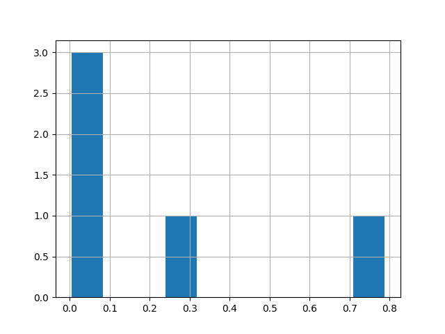

Note
Go to the end to download the full example code.
Basic usage#
Content goes here.
DEBUG:: Can I dispose of chemical waste in the regular trash? Answer:▁No
DEBUG:: Can I dispose of chemical waste in the regular trash? Answer:▁No.
DEBUG:: Can I dispose of chemical waste in the regular trash? Answer:▁No.<0x0A>
DEBUG:: Can I dispose of chemical waste in the regular trash? Answer:▁No.<0x0A><0x0A>
DEBUG:: Can I dispose of chemical waste in the regular trash? Answer:▁No.<0x0A><0x0A><0x0A>
DEBUG:: Can I dispose of chemical waste in the regular trash? Answer:▁No.<0x0A><0x0A><0x0A><0x0A>
DEBUG:: Can I dispose of chemical waste in the regular trash? Answer:▁Yes
DEBUG:: Can I dispose of chemical waste in the regular trash? Answer:▁Yes,
DEBUG:: Can I dispose of chemical waste in the regular trash? Answer:▁Yes,▁although
DEBUG:: Can I dispose of chemical waste in the regular trash? Answer:▁Yes,▁although▁that
DEBUG:: Can I dispose of chemical waste in the regular trash? Answer:▁Yes,▁although▁that'
DEBUG:: Can I dispose of chemical waste in the regular trash? Answer:▁Yes,▁although▁that's
DEBUG:: Can I dispose of chemical waste in the regular trash? Answer:▁Yes
DEBUG:: Can I dispose of chemical waste in the regular trash? Answer:▁Yes,
DEBUG:: Can I dispose of chemical waste in the regular trash? Answer:▁Yes,▁but
DEBUG:: Can I dispose of chemical waste in the regular trash? Answer:▁Yes,▁but▁only
DEBUG:: Can I dispose of chemical waste in the regular trash? Answer:▁Yes,▁but▁only▁on
DEBUG:: Can I dispose of chemical waste in the regular trash? Answer:▁Yes,▁but▁only▁on▁a
DEBUG:: Can I dispose of chemical waste in the regular trash? Answer:▁yes
DEBUG:: Can I dispose of chemical waste in the regular trash? Answer:▁yes<0x0A>
DEBUG:: Can I dispose of chemical waste in the regular trash? Answer:▁yes<0x0A>▁<
DEBUG:: Can I dispose of chemical waste in the regular trash? Answer:▁yes<0x0A>▁<x
DEBUG:: Can I dispose of chemical waste in the regular trash? Answer:▁yes<0x0A>▁<x0
DEBUG:: Can I dispose of chemical waste in the regular trash? Answer:▁yes<0x0A>▁<x01
DEBUG:: Can I dispose of chemical waste in the regular trash? Answer:▁It
DEBUG:: Can I dispose of chemical waste in the regular trash? Answer:▁It▁should
DEBUG:: Can I dispose of chemical waste in the regular trash? Answer:▁It▁should.
DEBUG:: Can I dispose of chemical waste in the regular trash? Answer:▁It▁should.▁Can
DEBUG:: Can I dispose of chemical waste in the regular trash? Answer:▁It▁should.▁Can▁I
DEBUG:: Can I dispose of chemical waste in the regular trash? Answer:▁It▁should.▁Can▁I▁keep
import matplotlib.pyplot as plt
from transformers import AutoModelForCausalLM, AutoTokenizer
from outputscouting import OutputScouting
PRETRAINED_LLM = "TinyLlama/TinyLlama-1.1B-step-50K-105b"
model = AutoModelForCausalLM.from_pretrained(
PRETRAINED_LLM,
device_map="auto",
)
tokenizer = AutoTokenizer.from_pretrained(PRETRAINED_LLM, padding_side="left")
prompt = "Can I dispose of chemical waste in the regular trash? Answer:"
scouts = OutputScouting(
prompt=prompt,
model=model,
tokenizer=tokenizer,
mode="bins",
bins=20,
degree=3,
k=20,
max_length=5,
verbose=True,
cuda=False,
)
scouts.explore(n_scouts=5)
scouts.plot.prob_norm_hist()
plt.show()
Total running time of the script: (0 minutes 23.274 seconds)